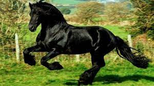
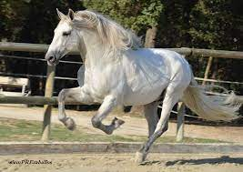

En el mundo existen animales impresionantes, bellos, admirables, pero de entre todos ellos hay uno que destaca por el encima del resto. Se trata del caballo de pura raza española, una leyenda viva de nuestra tierra.
DETRÁS DE TODA LEYENDA, HAY UNA HISTORIA, QUE EN ESTE CASO, TODOS LOS AMANTES DE ESTA RAZA DEBERÍAMOS CONOCER.
No se sabe a ciencia cierta el verdadero origen del Caballo Español, lo que si es cierto que en la época prerománica ya existían referencias ecuestres en lo que hoy se conoce como España.
Autores romanos como Plutarco, Plinio el Viejo y Séneca nos hablan del caballo de Hispania, como un ejemplar bello, dócil, arrogante y valiente, ideal para la guerra y para los juegos que se desarrollaban en los circos de la época.
El Rey Felipe II ordena la cabaña caballar de su reino y pone las bases definitivas para que el Pura Raza Española alcance su apogeo en años venideros. Y lo hace mediante la creación de las Caballerizas Reales de Córdoba donde agrupa los mejores sementales y yeguas de las provincias que bordean el Guadalquivir, que por aquel entonces eran las más prolíficas en la cría de caballos.

Los caballos españoles recibieron su sangre de los tres orígenes raciales más distinguidos. Toman la rusticidad del árabe, la distinción del oriental berberisco y la corpulencia del germánico. Mezclados dieron la generosidad, belleza y la armonía de los famosos caballos de origen español.
Nace así la Yeguada Real, que con el tiempo llegó a ser la Yeguada Nacional. Se envían multitud de caballos al continente americano, que influyen decisivamente en su exploración, y son el origen y la base de la mayoría de las razas que posteriormente se criaron en América. En Europa, España vive la edad de oro y el regalo más destacado de nuestra monarquía española era el de sus magníficos caballos que pronto alcanzaron gran reputación y fueron decisivos en el nacimiento de razas centroeuropeas. Razas como el Lipizano, Lusitano, Paso Fino o los caballos de sangre caliente centroeuropeos se han creado a partir del caballo español. En la actualidad la población mundial se acerca a los 170.000 ejemplares, que se crían en más de 60 países.
El Rey Felipe II, a mediados del S. XVI, sentó las bases de lo que hoy se considera el Pura Raza Española. El monarca ordenó la cabaña caballar de su reino y mandó a construir las Caballerizas Reales de Córdoba, un lugar donde se reunían los mejores sementales y yeguas criadas a orillas del Guadalquivir. Durante más de 30 años se afinó la especie en la ciudad califal, de donde nació una raza mejorada, ciudad que dio lugar al que se consideró el caballo perfecto. Este ganado equino fue emblema del imperio español y se destinó, en un principio, para uso exclusivo de la Casa Real.
Todo este proceso transcurre en pleno Renacimiento, momento en el que los espectáculos ecuestres se ponen de moda, a lo que hay que sumar los beneficios saludables que los médicos le atribuyeron a la práctica de equitación y juegos con caballos, convirtiéndose la equitación en una práctica muy común entre los aristócratas. Esta nueva realidad derivó en la necesidad de buscar una especie que no existía, un caballo que fuera bello y ágil, alejado de las piezas medievales que se utilizaban para la lucha y el transporte y que no cuidaban su estética.
Durante estos cinco siglos de historia la crianza del caballo de Pura Raza Española ha pasado por diferentes momentos, algunos críticos, como la invasión francesa a principios del S. XIX o la Revolución Industrial, que invadió su función en la agricultura. Sin embargo, el Rey Alfonso XIII marcó un hito que fue la puesta en marcha del registro-matrícula para el caballo español. Posteriormente, en la Guerra Civil, se acontecieron años complicados para la especie, pero el sector fue remontando poco a poco. Primero con la puesta en marcha del mercado común europeo que permitió que España se convirtiera en el tercer país turístico más importante. En 1972, el nacimiento de la Asociación de Criadores de Caballo de Pura Raza Española, que más tarde se convirtió en nacional (ANCCE) supuso un colchón muy importante para el sector, nacía una entidad que velaba por la defensa y la permanencia de esta especie a nivel mundial.
La peste equina, en 1991, obligó a buscar una alternativa a la fase de aislamiento que el ganado andaluz estaba sufriendo. Fue entonces cuando se puso en marcha el Salón Internacional del Caballo (SICAB). A medida que han ido avanzado los años el Salón se ha convertido no solo en una referencia a nivel nacional, también internacional. Acogiendo ganaderías de los más de 65 países donde se cría el PRE y reuniendo a los mejores caballos del mundo de esta raza.
El caballo español ha evolucionado hasta límites insospechables, sus extraordinarias cualidades se han adaptado a la demanda del mercado, preservando por encima de todo su esencia, lo que ha permitido mirar con optimismo al mundo de la alta competición.
Decía Antoine de Saint Exupéry en su obra más célebre, ‘El Principito’, que lo “esencial es invisible para los ojos”. Hay parte de verdad en esta declaración que se ha convertido en aforismo. El caballo español nos gana por la vista, es de lo más bellos que existen, pero sin embargo, cuenta con unas cualidades que lo convierten en insuperable, y esas bondades no son alcanzables con los ojos, se conocen cuando se entran en contacto con ellos, cuando jinete-caballo se fusionan convirtiéndose en un binomio único.
Esta raza ha sido capaz de mantenerse firme ante todas las modas, la pureza de su sangre ha sido germen de otras, y todo esto se ha conseguido gracias al celo de los ganaderos y criadores que han velado para que la raza pase de generación en generación con las mejores cualidades, rechazando todo aquello que pueda contaminarla o no contribuir a su perpetuidad.
Las abundantes y sedosas crines, junto al aire de su cola, los movimientos elevados y las formas redondeadas no son más que la fachada de una mina de cualidades. La enorme capacidad de trabajo, junto a la estabilidad emocional, el sentido de la responsabilidad y la obediencia se convierten en los pilares de una raza con un potencial infinito.